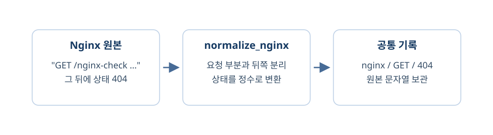

앱 기록은 이름으로 값을 읽었지만 Nginx 기록은 한 줄의 문자열이다. 요청을 감싼 큰따옴표를 기준으로 나누어 같은 방법·경로·상태를 꺼내보자. 이번 시간에 확인할 흐름이다.

- 큰따옴표 안에서 방법·경로, 닫힌 뒤에서 상태를 읽는다.
- 실제 Nginx 원본을 앱과 같은 항목으로 변환한다.
mini-watch-m5d3
└─ monitor/backend/learning/
├─ split_demo.py 작은 실행 예제
└─ normalize_nginx.py 이번에 완성1단계. 원본 한 줄을 나눠 보기
먼저 짧은 문자열로 나누는 동작을 보자
split은 Python 문자열을 기준 글자로 나누는 메서드다. 아래 예제는 핵심 동작만 확인하는 독립 실행 코드이며, 실제 수집 로그 대신 쓸 파일은 아니다. 작은 예제 실행하기
- VS Code에서 monitor/backend/learning 폴더에
split_demo.py를 새로 만든다. 다른 이름으로 clone했다면 현재 작업 중인 실제 폴더를 사용한다. - 아래 코드를 저장하고 프로젝트의 Command Prompt 터미널에서 명령을 실행한다.
monitor/backend/learning/split_demo.py — 파일 전체
text = '앞부분 "GET /nginx-check HTTP/1.1" 404 100'
prefix, request_text, suffix = text.split('"', 2)
print(request_text)
print(suffix.split()[0])GET /nginx-check HTTP/1.1
404프로젝트 폴더의 Windows CMD
cd /d C:\work\mini-watch-m5d3
docker compose exec -T monitor-api python -m learning.split_demosplit에 큰따옴표와 2를 주면 앞에서 두 번만 나눠 세 조각이 된다. 가운데 request_text에는 요청이, suffix에는 요청 뒤의 상태와 나머지가 들어간다. suffix.split()은 공백을 기준으로 나눈다. 그 결과의 첫 값인 [0]이 상태 글자 404다. 앱처럼 항목 이름으로 읽는 대신 위치를 이용한 것이다.
요청의 방법과 경로도 꺼내자
같은 split_demo.py의 전체 내용을 아래로 바꾸고 같은 명령을 다시 실행하자. split_demo.py — 두 번째 전체 코드
request_text = "GET /nginx-check HTTP/1.1"
method, path, protocol = request_text.split()
print(method)
print(path)
print(int("404") >= 400)GET
/nginx-check
True프로젝트 폴더의 Windows CMD
cd /d C:\work\mini-watch-m5d3
docker compose exec -T monitor-api python -m learning.split_demo세 조각은 방법·경로·통신 버전이다. protocol은 이번 표에 쓰지 않고, 상태는 int로 정수로 바꿔야 숫자 400과 비교할 수 있다.
문자열을 숫자와 바로 비교하면
의도된 오류 — 독립 실행 예시
status = "404"
print(status >= 400)TypeError: '>=' not supported between instances of 'str' and 'int'문자열과 정수는 이 방식으로 비교할 수 없다. int(status) >= 400처럼 숫자로 바꾼 뒤 비교한다.
2단계. 실제 Nginx 변환 함수 완성하기
원본을 공통 항목에 넣자
분석 파일 바꾸기
- VS Code에서
C:\work\mini-watch-m5d3폴더를 열고monitor/backend/learning/normalize_nginx.py을 선택한다. - 파일 내용을 아래 전체 코드로 바꾸고 Ctrl+S로 저장한다.
monitor/backend/learning/normalize_nginx.py — 파일 전체
def normalize_nginx(line, number):
prefix, request_text, suffix = line.split('"', 2)
method, path, protocol = request_text.split()
return {
"id": f"nginx-{number}",
"source": "nginx",
"method": method,
"path": path,
"status_code": int(suffix.split()[0]),
"raw": line,
}
if __name__ == "__main__":
from learning.log_data import read_logs
logs = read_logs()
if not logs["nginx"]:
print("Nginx 원본이 없습니다. 일반 게시판에서 로그인하거나 목록을 열어 보세요.")
for number, line in enumerate(logs["nginx"], start=1):
event = normalize_nginx(line, number)
print(event["source"], event["method"], event["path"], event["status_code"])방금 실행한 두 split이 함수 앞부분에 들어간다. source만 nginx로 구분하고, method·path·status_code는 앱 변환과 같은 이름으로 돌려준다. raw에는 원래 문자열을 보관한다. 아래 if __name__부터는 현재 파일을 읽고 결과를 출력하는 확인부다. 교안에서 사용하는 브라우저의 정상적인 combined 요청 형식을 대상으로 하며, 모든 종류의 손상된 로그를 처리하는 범용 파서는 아니다. 프로젝트 폴더의 Windows CMD
cd /d C:\work\mini-watch-m5d3
docker compose exec -T monitor-api python -m learning.normalize_nginxnginx GET /training-missing 404출력 중 한 행의 예시다. 내 화면에서 같은 경로의 앱 결과와 비교하면 출처만 다르고 방법·경로·상태는 같은 항목으로 읽힌다.
3단계. 두 변환 결과를 같은 요청으로 확인하기
새 경로로 양쪽 확인하기
- 브라우저에서 http://localhost:8081/nginx-check을 연다.
- 아래 두 명령을 실행하고 /nginx-check와 404가 양쪽 결과에 있는지 확인한다.
프로젝트 폴더의 Windows CMD
cd /d C:\work\mini-watch-m5d3
docker compose exec -T monitor-api python -m learning.normalize_app
docker compose exec -T monitor-api python -m learning.normalize_nginx두 파일을 따로 읽던 방식은 달랐지만 변환 결과를 읽는 방식은 같아졌다. 다음에는 이 결과를 하나의 목록에 담아 한 조건으로 오류를 찾는다.
확인문제
확인문제 1. Nginx 원본에서 먼저 어디를 나누는가?
정답과 해설
요청을 감싼 앞쪽 큰따옴표 두 개를 기준으로 나눈다. 가운데에서 요청 문자열을 얻는다.
확인문제 2. split의 두 번째 인수 2는 어떤 뜻인가?
정답과 해설
최대 두 번 나눈다는 뜻이다. 뒤쪽의 다른 큰따옴표까지 모두 나누지 않는다.
확인문제 3. request_text에는 어떤 값이 들어가는가?
정답과 해설
GET /nginx-check HTTP/1.1처럼 방법·경로·버전이 함께 들어간다.
확인문제 4. request_text.split()으로 얻는 세 조각은 무엇인가?
정답과 해설
method, path, protocol이다. 공백으로 나눈 순서에 맞춰 받는다.
확인문제 5. suffix.split()[0]은 어떤 값을 고르는가?
정답과 해설
요청 뒤 부분을 공백으로 나눈 첫 값인 상태 코드를 고른다.
확인문제 6. "404"를 그대로 400과 비교하면 왜 실패하는가?
정답과 해설
앞은 문자열이고 뒤는 정수이므로 TypeError가 난다. int로 변환한 뒤 비교한다.
확인문제 7. Nginx 변환의 source는 무엇인가?
정답과 해설
nginx이다. 앱 변환의 app과 구별하기 위한 출처 값이다.
확인문제 8. Nginx의 raw는 JSON 객체인가?
정답과 해설
아니다. 변환 전 한 줄 문자열을 그대로 보관한다. 앱 raw는 객체다.
확인문제 9. split_demo.py가 실제 수집 파일인가?
정답과 해설
아니다. 문자열을 나누는 동작을 확인하는 작은 예제 파일이다. 실제 원본은 nginx.log다.
확인문제 10. 두 정규화 결과의 항목을 같게 맞추면 무엇이 쉬워지는가?
정답과 해설
출처와 관계없이 method·path·status_code로 읽고 같은 숫자 조건을 적용할 수 있다.
두 원본을 각각 공통 형식으로 바꿨다. 이제 한 목록으로 합쳐 출처 구분 없이 오류 조건을 적용한다.